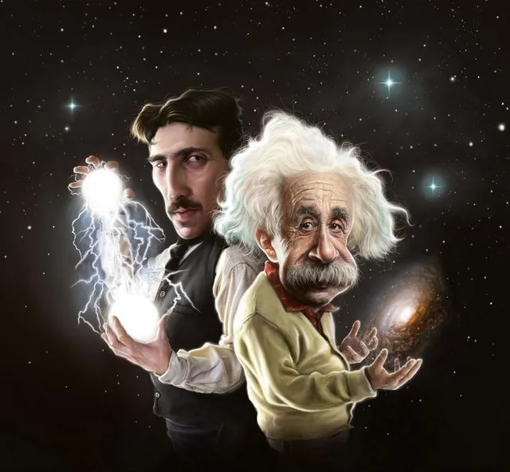

Este es un cuestionario de 20 preguntas de Quimica
Examen de 20 Preguntas
Examen de 20 Preguntas

1. ¿Que es la materia?
La materia es la energía.
La materia es solo lo que se puede tocar y ver.
Todo lo que ocupa un lugar en el espacio y tiene masa.
2. ¿Que son los estados de la materia?
Los estados de la materia no tienen propiedades físicas ni pueden cambiar de un estado a otro mediante cambios de temperatura o presión.
Son las formas físicas en que se presenta la materia.
sólido, líquido, gas, o plasma, Son conceptos de el estado de la materia.
3. ¿Como se le dice de liquido a solido?
Solidificación.
Condensacion.
Sublimacion.
4. ¿Como se le dice de un estado solido a gaseoso?
Evaporacion.
Solidificación.
Sublimacion.
5. ¿Qué es un cambio de estado?
Es cuando un objeto cambia de color por estar mucho tiempo al sol.
El paso de un estado a otro.
Es el cambio de temperatura de un cuerpo.
6. ¿Cuál es la diferencia entre una propiedad intensiva y extensiva?
Intensivas dependen de la cantidad, las Extensivas no.
Extensivas no dependen de la cantidad, las Intensivas sí.
Intensivas no dependen de la cantidad, las Extensivas sí.
7. ¿Qué es una mezcla homogénea y heterogénea?
Homogénea no se ven sus componentes, la Heterogénea sí.
Homogénea siempre está formada por múltiples fases, la Heterogénea siempre está formada por una sola fase visible.
Homogénea se ven los componentes, la Heterogenea no puede.
8. ¿Que es un Atomo?
El conjunto de un electron y un proton.
La unidad básica de la materia.
Microorganismo que mantiene la vida.
9. ¿Qué son protones, neutrones y electrones?
Componente primordial de la materia.
Pequeños animales acuáticos que viven en los arroyos de la montaña.
Partículas subatómicas que componen un átomo.
10. ¿Cómo se llama a una sustancia formada por dos o más elementos unidos?
Mezcla.
Volumen.
Compuesto.
11. ¿Que es una Molecula?
Unidad más pequeña de una sustancia que conserva sus propiedades químicas, formada por dos o más átomos unidos por enlaces químicos.
Partícula fundamental más pequeña de un elemento químico.
Un estado de la materia.
12. ¿Qué es un cambio físico?
Alteración en la materia que cambia su forma, apariencia o estado.
Cuando el fuego se solidifica.
Solidificar las cenisas.
13. ¿Cual es la formula del agua?
CO₂.
H₂O.
H₂O₂.
14. ¿Que representa el numero atomico (Z)?
La cantidad de neutrones en el nucleo.
La suma de protones y neutrones.
La cantidad de protones en el nucleo.
15. ¿Que es un elemento quimico?
Una sustancia que no puede descomponerse en otras.
La union de dos atomos diferentes.
La solucion compuesta de varias sustancias.
16. ¿Cuál de los siguientes es un cambio fisico?
Oxidacion del hierro.
Fusion del hielo.
Combustion del papel.
17. ¿Cuál es la unidad del Sistema Internacional para la cantidad de sustancia?
Gramo (g).
Mol (mol).
Litro (L).
18. ¿Que tipo de enlace se forma cuando un metal cede electrones a un no metal?
Enlace ionico.
Enlace covalente.
Enlace metalico.
19. ¿Que indica la ley de la conservacion de la materia?
La materia puede desaparecer durante una reaccion quimica.
La materia se crea cuando ocurre una reaccion.
La materia no se crea ni se destruye, solo se transforma.
20. ¿Cuál de los siguientes es un gas noble?
Oxigeno (O2).
Helio (He).
Nitrogeno (N2).